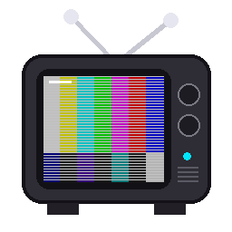
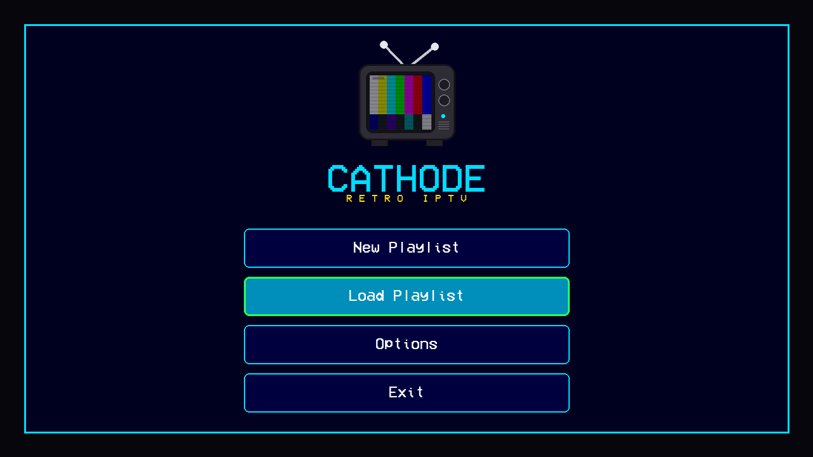
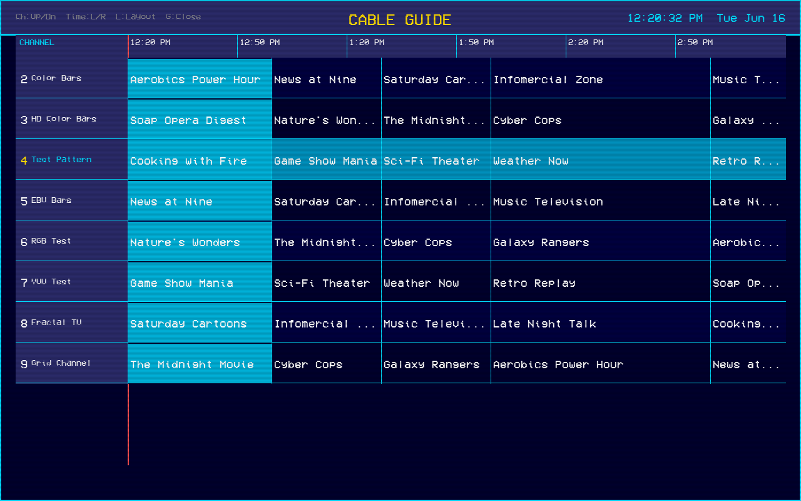
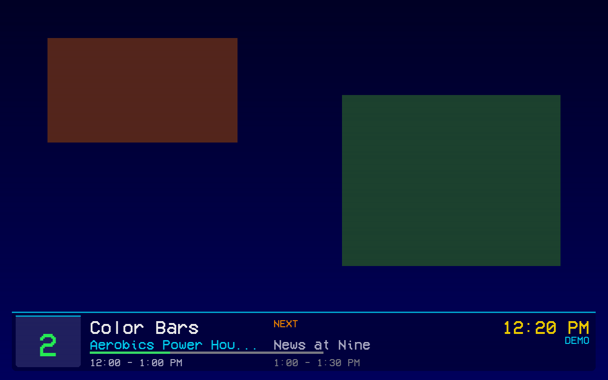

Cathode turns your IPTV streams into an 80s/90s cable-TV experience — channel-change static, a full program guide, CRT scanlines & vignette, and a phosphor-glow on-screen display. It plays standard M3U playlists with XMLTV guide data, and is built to feel right on a Steam Deck in the living room as much as on a desktop.



Load any M3U playlist with optional XMLTV EPG. Save multiple networks and switch instantly.
Classic scrolling cable grid, plus a detail layout with a live video preview window.
Channel-change static synced to buffering, scanlines and a vignette — all toggleable.
Nine color themes, bundled retro fonts, drop-in custom fonts, and a live custom-theme editor.
Native XInput/SDL gamepad control, plus a Steam Deck Game Mode layout.
Swap the window between monitors; the aspect ratio and OSD rescale automatically.
Windows — grab the portable build from
Releases,
unzip, and run Cathode.exe. No prerequisites (mpv is bundled).
Linux / Steam Deck — clone and run:
git clone https://github.com/viviancross/Cathode.git cd Cathode ./install.sh # sets up mpv + dependencies ./cathode.sh
On first launch you'll land on the main menu — add a playlist (M3U URL) and start watching. Full controls, autostart and configuration are in the README.